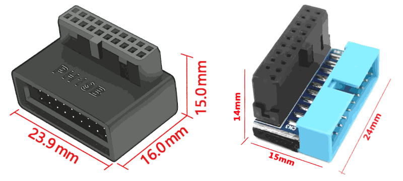

Ubuntu early configuration for P910 w/K80
This article is related to the setup of the connections with/in the Fujitsu Esprimo P910 E85+, early Ubuntu 24.04.1 LTS configuration and to do some tests in preparation of installing the Nvidia Tesla K80 accelerator board. This article has been created starting from the notes taken at the end of the article about dual PSU installation, in the final version of the manual which is going to collect all the contribution, this article will be incorporated at the following chapter after the P910's BIOS upgrade and hardware diagnostic tests.Front USB 3.0 ports
The Nvidia Tesla K80 is so long that it goes over the USB 3.0 connector but it is too high. In order to keep the two USB 3.0 front ports, a 90° adapter can be used. There are two similar adapters quite similar and I took the one with 15 mm height which it seems to fit in place but the other which is 1 mm lower, I think it fits even better.

right click menu to enlarge (x2) the image
Because the front USB 3.0 ports are working at 40 MB/s - while those in the back at 450 MB/s - can be fine living only with 2x USB 2.0 at 30 MB/s on the front panel. Therefore, this adapter should be considered an optional. It is better to buy an USB 3.0 extension cable and leave it connected to one of the ports on the back of the case.
right click menu to enlarge (x2) the image
Wi-Fi/LAN networking
The Wi-Fi dongle is NOT an alternative to the cabled network for transferring data to the GPU server. Because configuring the Wi-Fi in a way that clients over that network can see each other is NOT a good idea, in terms of security nor data privacy. On the other hand, connecting the GPU server in a cabled network requires a proxy/firewall for reaching the Internet which can be useful for maintenance, updates and downloads. In a home network the Wi-Fi usually provides Internet access. Providing the GPU server with an independent connection to the Internet, which can physically disable removing the USB dongle, allows us to downsize the RJ45 cabled network to a single link point-to-point with our workstation without configuring it as Internet proxy as well. Please note that within the RTL8188’s family there are adapters which support 2.4GHz at 150 Mbit/s, only. Just in case your Wi-Fi network is working only at 5GHz, instead. Moreover, it will result relatively slow to leverage a full-fledged optic fiber Internet connection.Ethernet configuration
First of all we need to set up the Ethernet network link between the workstation and the GPU server.| Hostname | IPv4 | IPv6 | IP address | Netmask | Gateway | DNS | Route | Device |
|---|---|---|---|---|---|---|---|---|
| X390 | manual | disable | 10.10.10.1 | 255.255.255.0 | off | automatic | usbeth0 | |
| P100 | manual | disable | 10.10.10.2 | 255.255.255.0 | off | automatic | pcieth0 |
ⓘ
For those prefer to use Microsoft Windows, please notice that I strongly doubt that a 2014 system will be support by Windows 11 and hence you will be forced to be stick with Windows 10 at the little extra cost $30/year support plus the a license than you might provide yourself buying a refurbished OEM sata disk/system. However, if you decide to go with Windows 10 and pay for its support, then refer to those you are paying to give you support! 
Before everything else, note that the Esprimo P910 has 100 Mbit/s network and this is almost the best you can achieve from it:
k80user@p910:~$ nc -l 1111 > /dev/null
roberto@x390:~$ dd if=/dev/zero bs=1500 count=16K | nc -N 10.10.10.2 1111
16384+0 records in
16384+0 records out
24576000 bytes (25 MB, 23 MiB) copied, 2.01924 s, 12.2 MB/s
Remote control
In order to avoid to waste our time switching between our laptop/PC and the GPU server:Thermal control
Let start from the basics, here below some line commands for Ubuntu just for starting with the P910 before even installing the Tesla K80 within, with sudo -s root priviledges:
apt install lm-sensors fancontrol read-edid i2c-tools python3-smbus pigz \
gkrellm gkrellm-cpufreq gkrellm-x86info gkrellmwireless gkrelltop \
kmod cpufrequtils wget hardinfo hwinfo htop unzip
service kmod start; yes | sensors-detect; sensors; pwmconfig
Package id 0: +44.0°C (high = +85.0°C, crit = +105.0°C)Which is the highest temperature seen up to now, with the case open and laying on its closed side. Which makes the CPU radiator operate in a sub-optimal way, as per its factory design. Without the support of an active device like a fan, it relies on the "hot-air is lighter" physics principle that lets the air flow bottom-up through its fins for natural convection. But in that position, laying down 90° tilted, the air tends to remain trapped among its fins instead of flowing and the main fan - with the case open - is too far to bring a sensitive benefit before its flow spreads around unguided.
Noise control
Time to close the tower case and raise it on its feet again.
dd if=/dev/zero bs=1M | pigz -11 -p4 - >/dev/null &
for i in $(seq 1 40); do sensors | grep Package;
sleep 1; done & sleep 30; killall pigz; echo;
Package id 0: +77.0°C (high = +85.0°C, crit = +105.0°C)At 75°C the main 12 cm fan starts to be loud, working at almost the full throttle. This is because the default BIOS configuration is tuned to be silent as much as possible. However, these settings could be changed and the difference is very sensitive.
Cooling noise tests
In order to have a quantitative idea about the noise figure, I have installed this Android application on my smartphone and put it on the tower case.| Acoustic Management | Fan Control | Noise (RdB) | Noise (R%) | Start | Highest | Ending | T-Gap |
|---|---|---|---|---|---|---|---|
| enabled | auto | 32 | 1.00 | 49-61°C | 67-74°C | 51-57°C | 83% |
| enabled | enhanced | 40 | 1.25 | 42-48°C | 60-63°C | 42-45°C | 66% |
| irrelevant | disabled | 64 | 2.00 | 32-34°C | 46-48°C | 28-38°C | 43% |
ⓘ
In the final version of the manual, this part will end up after the BIOS upgrade chapter, so before every hardware change. Instead, the temperatures above reported, have been taken after having modified the Esprimo P910 moving its main 12cm fan and installing the handcraft baffle to increase the case air-flow. At the time of the measures, the two middle PCI slot covers were removed. Hence, it could be possible to find different values with the original hardware configuration.
Spinning the whirlybird
Unsurprisingly, noisier it gets, cooler it ends up. How much? The absolute temperature scale is graded in Kelvin but its zero is too far away. However, neither Celsius nor Fahrenheit are good in providing a relative reference. The main point is the same: setting the zero, but in this case the zero is the environment temperature which is 20°C, our reference zero. While 85°C is our "boiling water" point which is a reference temperature for the CPU that has been indicated by the CPU foundry process. For comparison, the GPU incorporated into the Tesla K80 card, has an 88°C alarming temperature trigger. Under this PoV, 43% is 43°R, while the room temperature is 0°R and 100°R is the warning temperature. The table presented in the previous section shows that the original system can potentially be quieter than a quiet room in the night but also annoying like the keyboard beep when a key is kept pressed down, but at lower frequency. Once completed the system software configuration, the GPU card will be installed and tested.DVI to VGA adapter
The Esprimo P910 comes with a DVI port, and in case you plan to couple with an old VGA monitor like I did, then expect that a cheap DVI-VGA adapter will limit the monitor resolution to 1024x768 despite being advertised differently. Which is enough for doing the preliminary stuff and remoting the desktop. Unfortunately, this will also affect the resolution of the shared desktop as long as we are using the quick & easy way described here. In order to mitigate this trouble it is worth installing the gnome tweaks application and also synaptic will be useful for a more advance package installation and management:Share alike
© 2025, Roberto A. Foglietta <roberto.foglietta@gmail.com>, CC BY-NC-ND 4.0